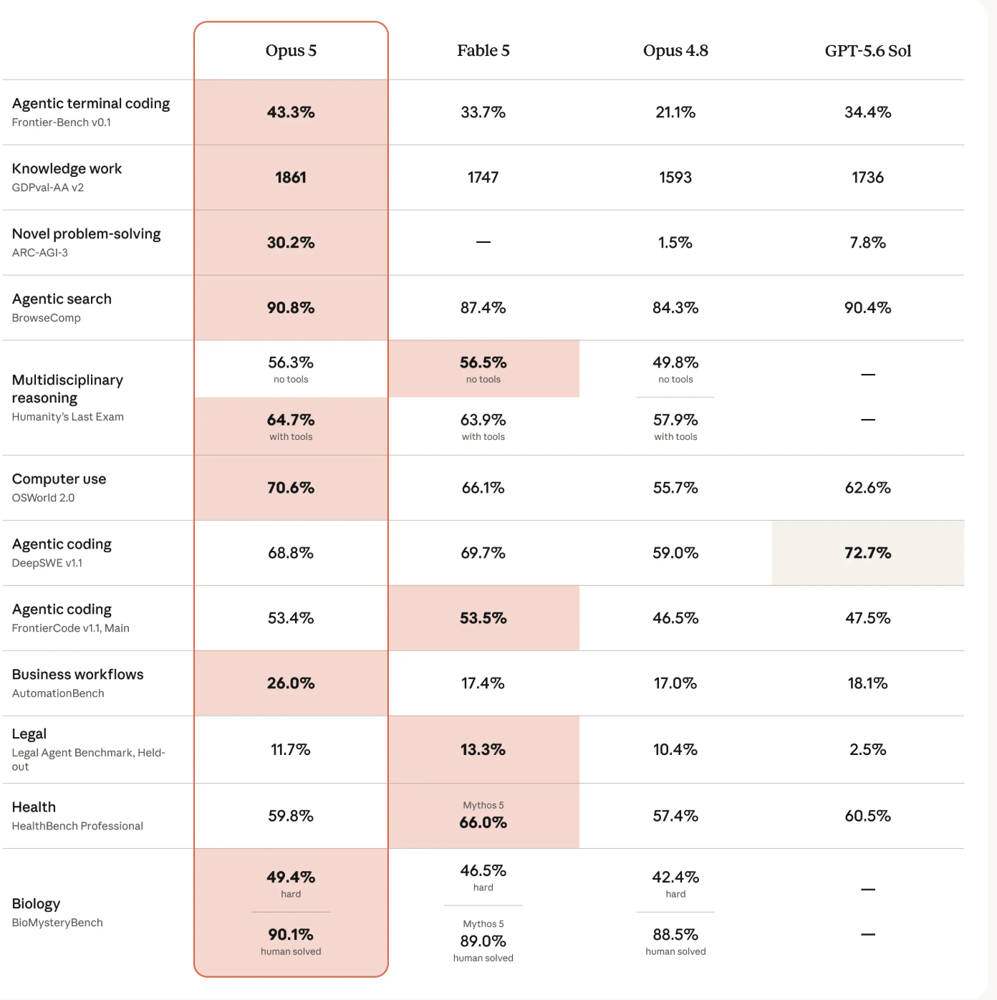
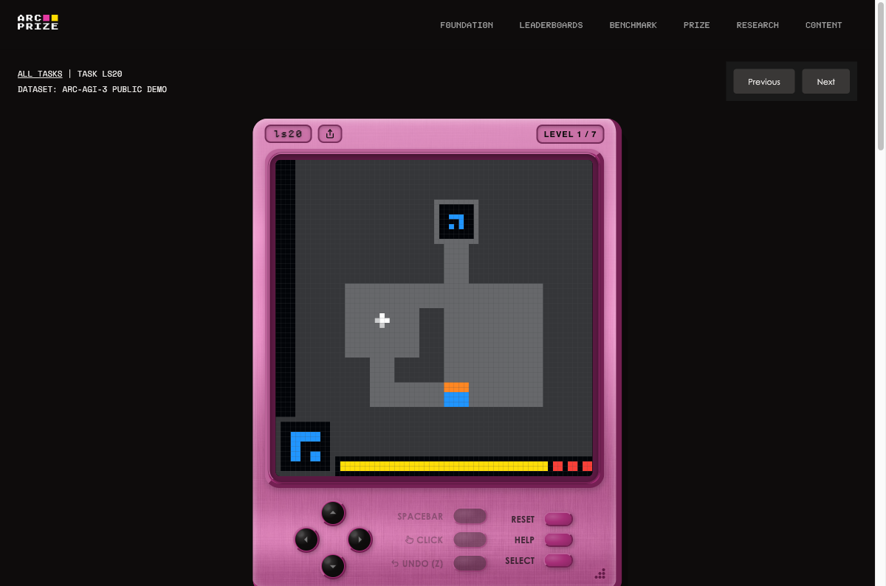

A reading guide
Reading the
Benchmark Table
How to interpret model evaluation scores — and what the July 2026 frontier comparison actually says once you know what each number means.
The artifact
One table,
twelve rulers
Every row is scored by a different system. That single fact is the source of nearly every misreading.

The landscape
Six categories
Every row in the table belongs to one of six categories. What a score means depends entirely on which one it came from.
Software coding
Fix, build and ship inside a real shell.
Frontier-Bench · DeepSWE · FrontierCode
Knowledge work
Office deliverables from 44 professions, judged blind.
GDPval-AA
Dedicated professions
Licensed-domain work — law, medicine, biology.
Legal Agent Benchmark · HealthBench Pro · BioMysteryBench
Novel reasoning
Questions built so no training run has seen them.
ARC-AGI-3 · Humanity's Last Exam
Info search
Answers that are fixed but genuinely hard to find.
BrowseComp
Computer use & workflows
Operate real software — long chains, no partial credit.
OSWorld 2.0 · AutomationBench
The table's own category labels, consolidated from twelve rows.
The methods
How each one is marked
| Category | Benchmark | Binary pass / fail |
Rubric scored |
Human baseline |
LLM judge |
|---|---|---|---|---|---|
| Coding | Frontier-Bench | ● | — | — | — |
| DeepSWE | ● | — | — | — | |
| FrontierCode | ◐ | ● | — | ● | |
| Knowledge work | GDPval-AA | — | — | ● | ● |
| Professions | Legal Agent Bench | ◐ | ● | — | ? |
| HealthBench Pro | — | ● | ◐ | ● | |
| BioMysteryBench | ● | — | ● | — | |
| Novel reasoning | ARC-AGI-3 | ◐ | — | ● | — |
| Humanity's Last Exam | ● | — | — | ◐ | |
| Info search | BrowseComp | ● | — | ◐ | ◐ |
| Computer use | OSWorld 2.0 | ● | — | — | — |
| AutomationBench | ● | — | ● | — |
What a rubric actually is
A human-written checklist of criteria for one task — "cites a real statute · flags the limitation period · no invented case law." Something walks the list and awards points per criterion met — usually another LLM, which is why the two right-hand columns overlap. Binary asks "did it run?" A rubric asks "is it any good?" — only the first has a machine-checkable answer.
Tolerance
One mistake, different cost
Coding benchmarks don't score gently because they're coding — most just test one thing per task. The real variable is how many gates a task has to clear.
Nothing to compound
One check: does pytest pass? A near-miss and a clean fix score the same as long as the test goes green.
Any one blocker zeroes it
Fixed · no regression · scoped — all three must clear. Nail two of three and the task still scores 0.
Compounding, not additive
Flag → notify → report. Every step must land. The further the chain runs, the more a single slip costs.
The math behind it
A model right 95% of the time per step scores 95% on a single-gate task, ~86% on a short 3-step chain, and ~36% on a 20-step chain — same underlying reliability, wildly different numbers. Legal Agent Benchmark's 11.7% isn't a weaker model; it's a longer chain.
Coding
Coding
| Benchmark | Example task |
|---|---|
| Frontier-Bench | Full shell, no scaffolding. "Production deploy is broken — SSH in, find what regressed, get the health check green again." |
| DeepSWE | Invented, not an adapted PR. "Implement a token-bucket rate limiter with three custom edge cases" — no existing GitHub fix to recall. |
| FrontierCode | Judged, not just run. "Fix a race condition in the job queue" — a blanket lock 'solves' it but fails the no-regression and scope gates. |
The hidden variable
None of these test a bare model — they test a model plus a harness. A tuned harness against a bare shell can move the same model by 10+ points.
Reasoning
Novel problem-solving
No instructions. The model is dropped into a game and must figure out the rules by acting — then it's scored on how many steps it needed, against a human baseline.
Match the human pace, score 100%. Take twice as long, score ~25% — not 50%, because the gap is squared.

ARC-AGI-3, task ls20 — playable at arcprize.org. The only benchmark on the table that has not saturated.
Generic problems
Knowledge work
There is no score anywhere in this pipeline. Every number comes from one model's work being preferred over another's.
Real professional work
Tasks from 44 occupations, written by practitioners.
The model does the job
An agentic sandbox ships real documents and spreadsheets.
Blind, side by side
Model output vs. human output — an LLM picks the winner.
Fitted into an Elo scale
Win/loss record converted to a score, human expert = 1000.
Opus 5 scores 1861 — a 99% win rate against the human deliverable, head-to-head
But the judge panel includes Claude Opus 4.8, from the same lab as the model topping this row — and LLM judges reliably favour polished, well-structured writing over the terse, shorthand-heavy work real experts actually deliver.
1861 means “this looks like expert work to an LLM” — not “this replaces experts.”
Long-running tasks
Long chains,
no partial credit
Flag at-risk customers → notify the owners → write the report. Every step must be right; one failure scores the whole task zero.
11.7% is the probability that every criterion passed — not that 11.7% of the work got done.
The failure mode that matters
72–91% of failures are the agent reporting success while the world state is actually wrong.
That is a self-verification gap, not a capability gap — and it is worse, because nothing raises an error.
The instrument
Every benchmark carries systematic error
Even a number that is honestly reported and fairly compared was produced by something with known defects. Four stages, four failure modes.
Coaching looks like ability
Like a student whose tutor drilled thousands of practice papers in exactly this style. They never saw the real exam — and can say so honestly. The score still goes up. From outside, coaching and real ability look the same.
The ground truth can be wrong
~29% of HLE's bio/chem answers conflict with published literature. Questions were admitted only if frontier models failed them, with a 5-minute review cap — selecting for "stumps the AI" selects for broken questions.
Judges and rewards leak
LLM judges reward length and polish over correctness. Even deterministic scoring leaks — Zapier watched agents hold their reward while API calls fell to near zero.
Composites hide regressions
Indices net sub-scores against each other — #1 on AA-Omniscience hallucinates more than #2. The metric that exposes it, calibration error, goes uncited by every vendor.
What survives
And any published benchmark gets scraped into the next model's training data — so it wears out with age, however well it was built. Only the ones holding a private set of questions back resist that: ARC-AGI-3, AutomationBench, Legal Agent Benchmark.
What the data says